55 Tiere aus deutschen Gärten, mit Foto und Größe
Wer lebt in deinem Garten?
Nützlinge, Bestäuber und Schädlinge im Garten bestimmen: am Foto, an den Fraßspuren und an wenigen sicheren Merkmalen.
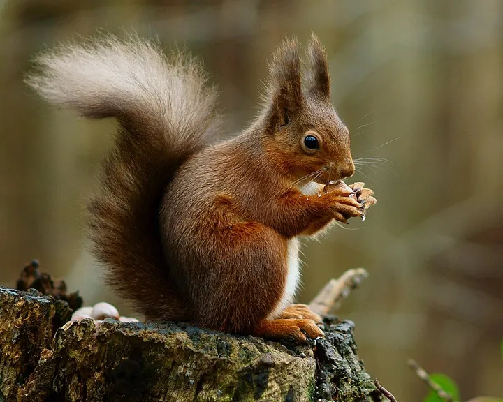
Jetzt zu sehen · NovemberEichhörnchenIm September und Oktober ist es eifrig dabei, Vorräte zu verstecken. Foto: Peter Trimming (Quelle, öffnet in neuem Fenster), CC BY 2.0 (Lizenztext, öffnet in neuem Fenster)Größentafel
Von der Bohnenlaus bis zum Fuchs: so groß sind Gartentiere wirklich.
Größenvergleich ansehen- Schwarze Bohnenlaus1,5–3 mm
- Siebenpunkt-Marienkäfer5–8 mm
- Dunkle Erdhummel1,1–2,3 cm
- Erdkröte8–12 cm
- Igel20–30 cm
- Rotfuchs60–75 cm
Die Balken wachsen logarithmisch, sonst wäre die Bohnenlaus neben dem Fuchs unsichtbar.
Jetzt im November im Garten
- EichhörnchenHauptzeit
- RotfuchsHauptzeit
- MaulwurfHauptzeit
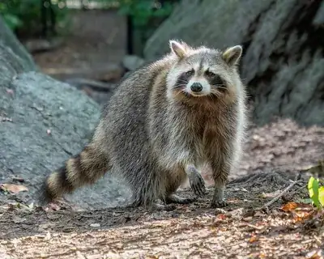
WaschbärHauptzeit- SteinmarderHauptzeit
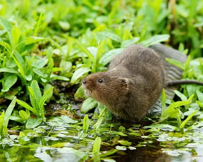
SchermausHauptzeit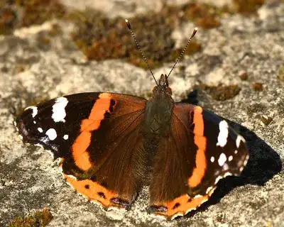
AdmiralHauptzeit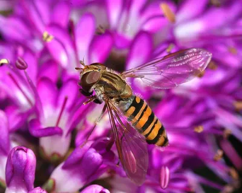
HainschwebfliegeHauptzeit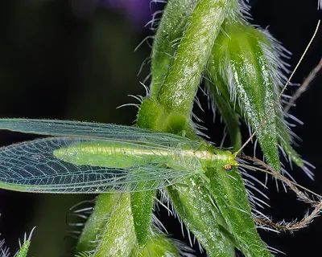
FlorfliegeHauptzeit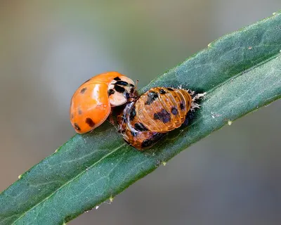
Asiatischer MarienkäferHauptzeit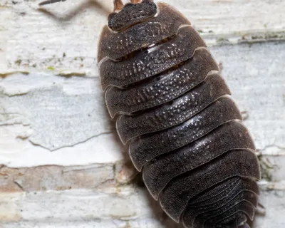
KellerasselHauptzeit- RegenwurmHauptzeit
- TigerschnegelHauptzeit
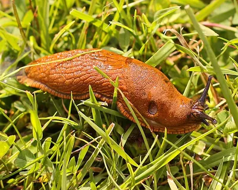
Spanische WegschneckeHauptzeit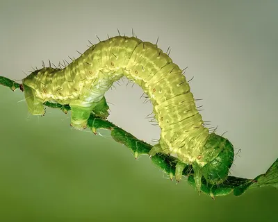
Kleiner FrostspannerHauptzeit- Weiße FliegeHauptzeit
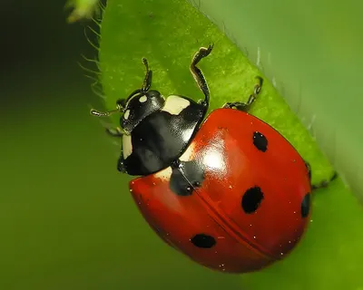
Siebenpunkt-MarienkäferHauptzeit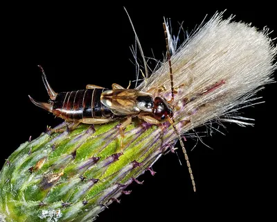
Gemeiner OhrwurmHauptzeit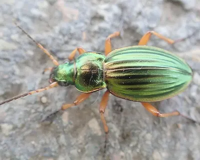
GoldlaufkäferHauptzeit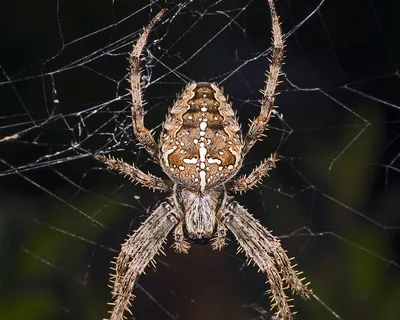
GartenkreuzspinneHauptzeit- WeinbergschneckeHauptzeit
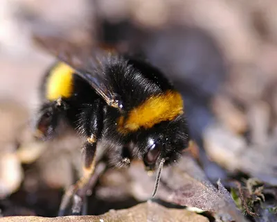
Dunkle ErdhummelHauptzeit- HonigbieneHauptzeit
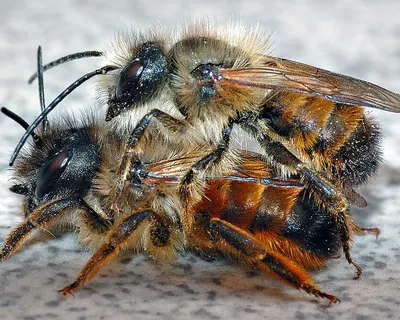
Rote MauerbieneHauptzeit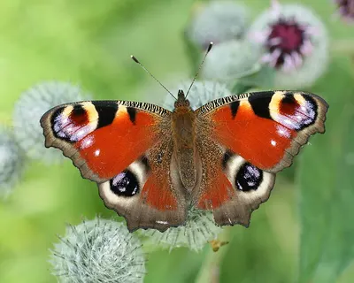
TagpfauenaugeHauptzeit- TaubenschwänzchenHauptzeit
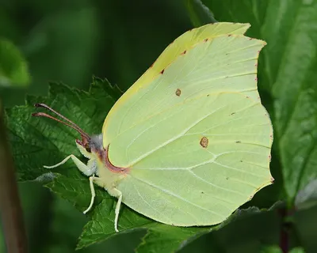
ZitronenfalterHauptzeit- Schwarze BohnenlausHauptzeit
- BuchsbaumzünslerHauptzeit
- Großer KohlweißlingHauptzeit
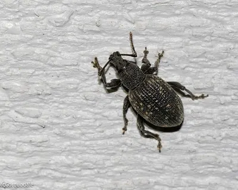
Gefurchter DickmaulrüsslerHauptzeit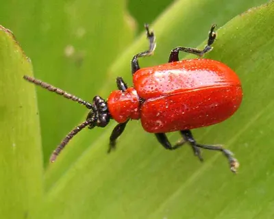
LilienhähnchenHauptzeit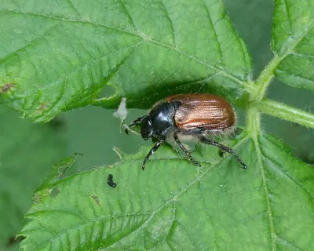
GartenlaubkäferHauptzeit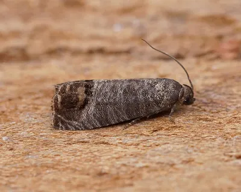
ApfelwicklerHauptzeit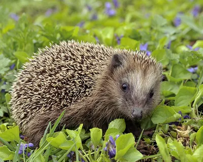
IgelHauptzeit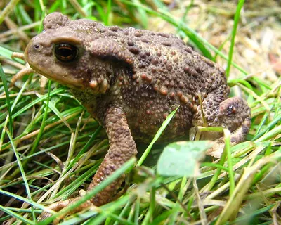
ErdkröteHauptzeit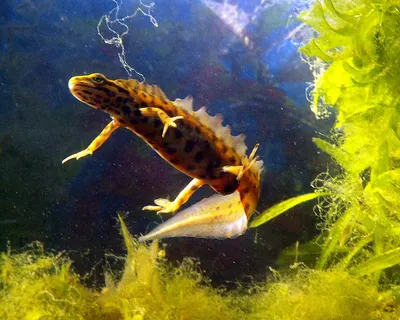
TeichmolchHauptzeit- BlindschleicheHauptzeit
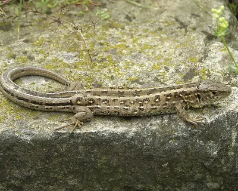
ZauneidechseHauptzeit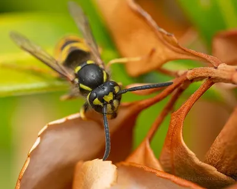
Gemeine WespeHauptzeit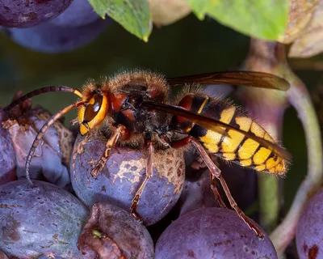
HornisseHauptzeit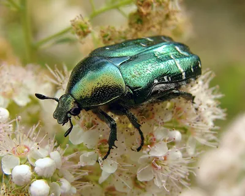
Goldglänzender RosenkäferHauptzeit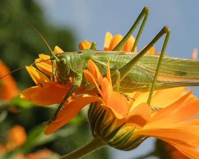
Grünes HeupferdHauptzeit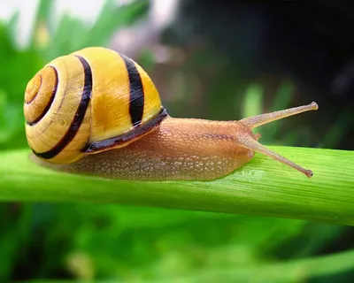
Hain-BänderschneckeHauptzeit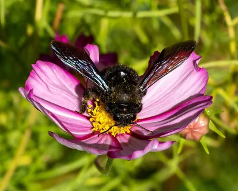
Blauschwarze HolzbieneHauptzeit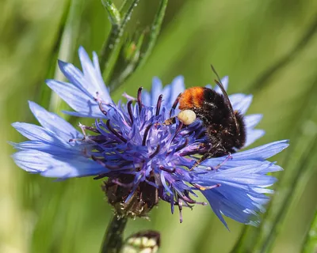
SteinhummelHauptzeit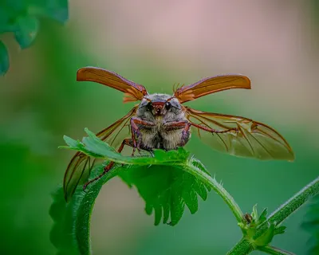
FeldmaikäferHauptzeit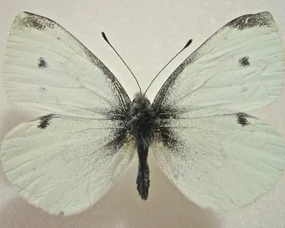
Kleiner KohlweißlingHauptzeit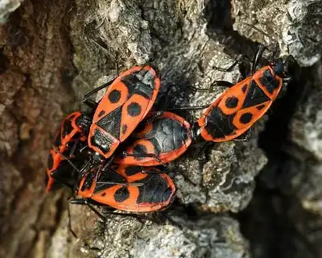
FeuerwanzeHauptzeit- Schwarze WegameiseHauptzeit
- SiebenschläferHauptzeit
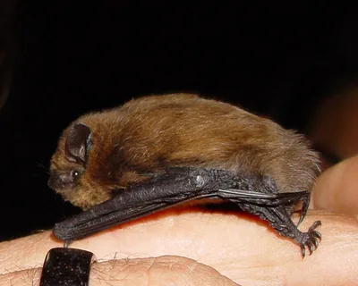
ZwergfledermausHauptzeit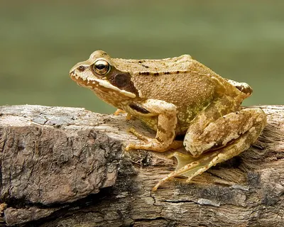
GrasfroschHauptzeit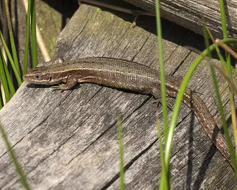
WaldeidechseHauptzeit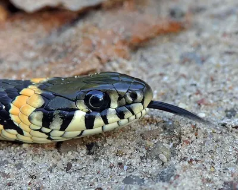
RingelnatterHauptzeit
Arten
- tagaktiv
Eichhörnchen
GartengastSäugetiereFlinker Kletterer mit buschigem Schwanz, der im Herbst Nüsse für den Winter vergräbt.
-
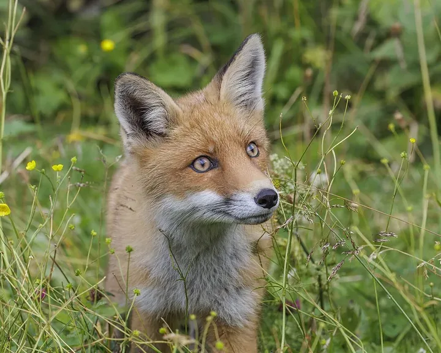
dämmerungsaktivnachtaktivRotfuchs
GartengastSäugetiereRotbraunes Raubtier mit buschiger, weiß gespitzter Rute. Füchse streifen nachts durch Gärten und jagen Mäuse.
-
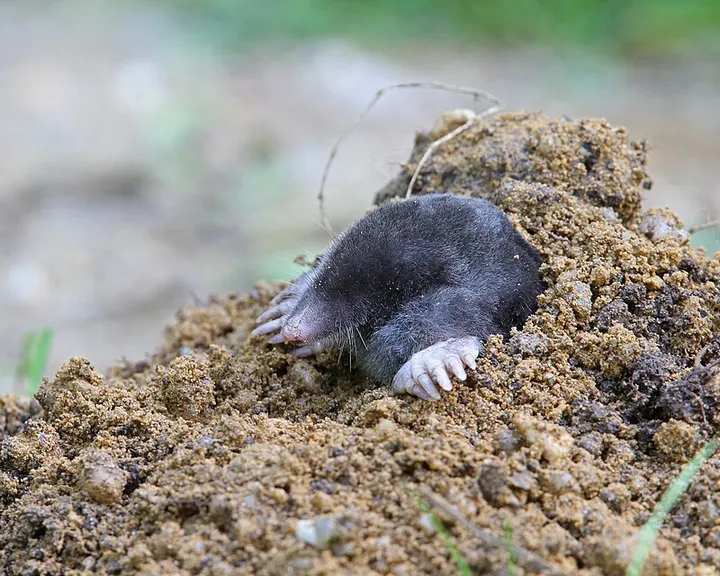
tagaktivnachtaktivMaulwurf
GartengastSäugetiereSamtschwarzer Gräber mit Schaufelhänden. Seine runden Hügel zeigen einen gesunden, wurmreichen Boden.
- nachtaktiv
Waschbär
GartengastSäugetiereGraues Raubtier mit schwarzer Gesichtsmaske und geringeltem Schwanz, das nachts Mülltonnen, Obst und Vogelnester plündert.
-
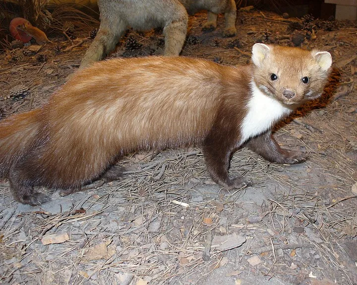
nachtaktivSteinmarder
GartengastSäugetiereDer Marder der Siedlungen: lebt gern in Scheunen und auf Dachböden und ist nachts unterwegs.
-
 tagaktivnachtaktiv
tagaktivnachtaktivSchermaus
SchädlingSäugetiereDie „Wühlmaus“ des Gartens: Sie frisst Wurzeln, Möhren und Tulpenzwiebeln und hinterlässt flache Erdhügel.
-
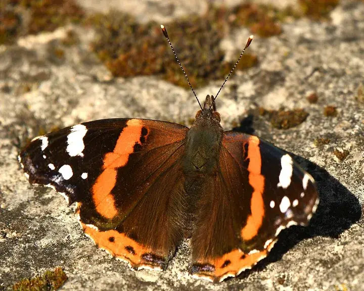
tagaktivAdmiral
BestäuberSamtschwarzer Falter mit roten Binden und weißen Flecken an den Flügelspitzen, der im Herbst an Fallobst saugt.
-
 tagaktiv
tagaktivHainschwebfliege
NützlingGelb-schwarz gebänderte Fliege, die wie festgenagelt in der Luft steht. Harmlos, denn sie kann nicht stechen.
-
 nachtaktiv
nachtaktivFlorfliege
NützlingZartes, hellgrünes Insekt mit goldenen Augen und durchsichtigen Flügeln, das nachts ans Licht fliegt.
-
 tagaktiv
tagaktivAsiatischer Marienkäfer
Teils NützlingEingeschleppter Marienkäfer mit wechselndem Kleid: gelb, orange oder schwarz, mit null bis neunzehn Punkten.
- nachtaktiv
Kellerassel
NützlingKrabbeltiereGraues, gepanzertes Krabbeltier unter Steinen und Töpfen. Asseln sind Krebse, die an Land leben, und echte Humusmacher.
-
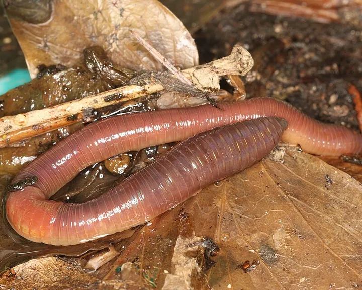
nachtaktivRegenwurm
NützlingDer wichtigste Gärtner unter der Erde: Er zieht Laub in seine Gänge und macht daraus fruchtbaren Humus.
-
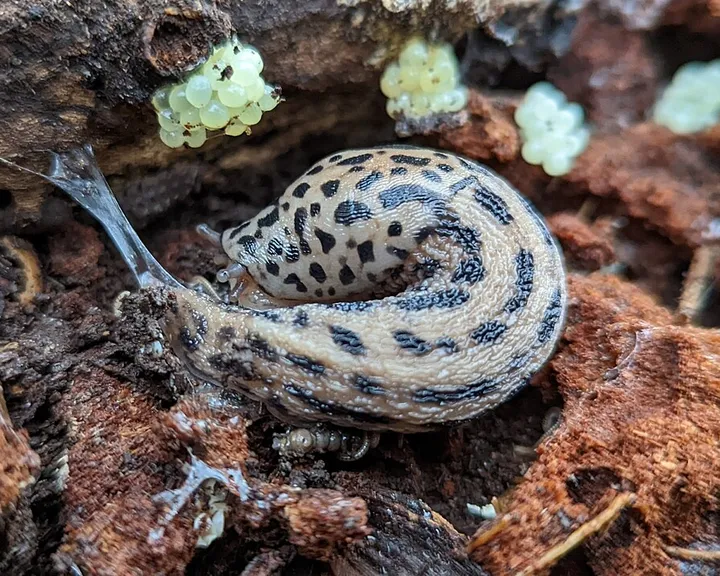
nachtaktivTigerschnegel
NützlingGroße, getigerte Nacktschnecke, die vor allem Welkes frisst und Gelege anderer Schnecken vertilgt.
-
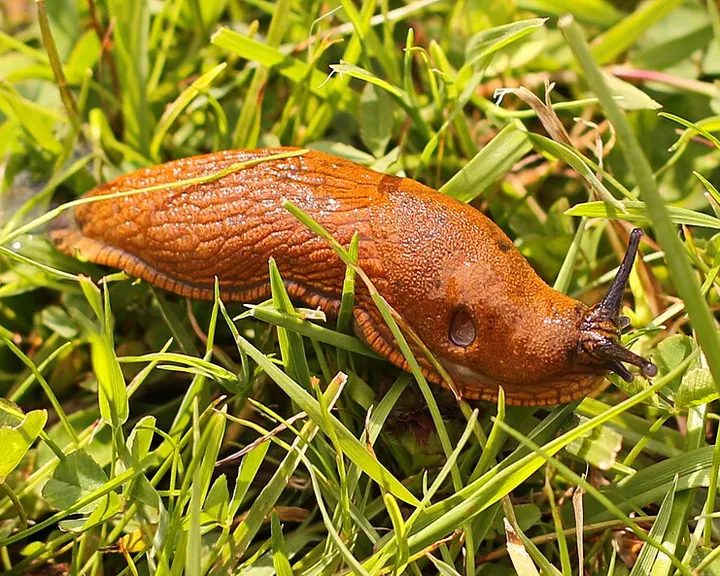
nachtaktivSpanische Wegschnecke
SchädlingDie häufigste Nacktschnecke im Gemüsebeet: einfarbig orange bis rotbraun und nach Regen in Massen unterwegs.
-
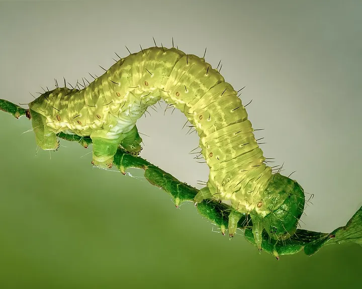
nachtaktivKleiner Frostspanner
SchädlingFalter, der im Spätherbst fliegt. Die Weibchen können nicht fliegen und klettern die Obstbäume hinauf.
-
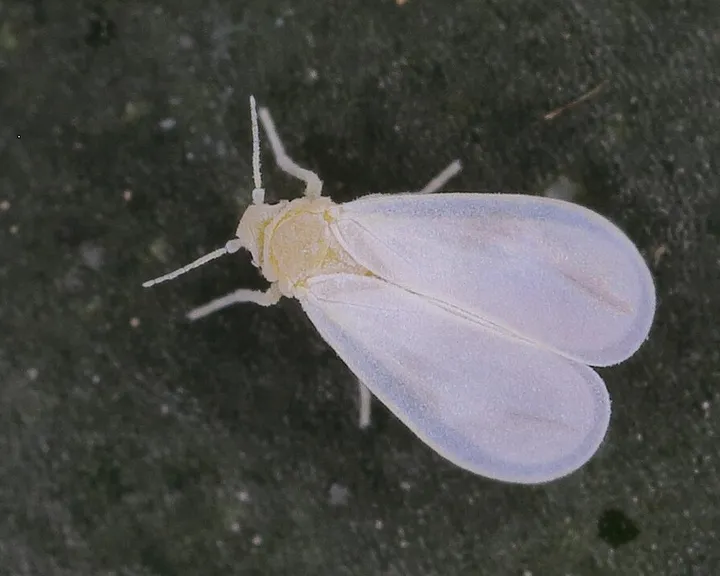
tagaktivWeiße Fliege
SchädlingWinzige weiße Insekten, die wie eine Wolke auffliegen, sobald man die Pflanze berührt.
-
 nachtaktiv
nachtaktivIgel
NützlingSäugetiereStacheliger Nachtwanderer, der auf seiner Runde mehrere Gärten besucht und dabei Käfer und Raupen frisst.
-
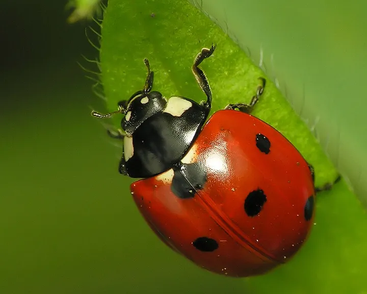
tagaktivSiebenpunkt-Marienkäfer
NützlingDer bekannteste Glücksbringer im Garten: rot mit sieben schwarzen Punkten und ein eifriger Blattlausjäger.
-
 tagaktiv
tagaktivTagpfauenauge
BestäuberRotbrauner Schmetterling mit vier großen, schillernden Augenflecken auf den Flügeln.
- tagaktiv
Dunkle Erdhummel
BestäuberPelzige, laut brummende Hummel mit gelben Binden und weißem Hinterleibsende. Eine der ersten im Frühjahr.
-
 tagaktivnachtaktiv
tagaktivnachtaktivHornisse
NützlingUnsere größte Wespe: rotbraun und gelb gezeichnet, aber ruhiger als ihr Ruf und ein wichtiger Insektenjäger.
-
 dämmerungsaktivnachtaktiv
dämmerungsaktivnachtaktivZwergfledermaus
NützlingSäugetiereUnsere kleinste und häufigste Fledermaus. In der Dämmerung kurvt sie flink um Häuser und Bäume.
- tagaktiv
Zauneidechse
GartengastAmphibien & ReptilienKräftige Eidechse, die sich an sonnigen Mauern wärmt. Die Männchen tragen im Frühjahr grüne Flanken.
- nachtaktiv
Erdkröte
NützlingAmphibien & ReptilienWarzige, braune Kröte mit kupferroten Augen, die nachts Schnecken und Käfer frisst.
- dämmerungsaktivnachtaktiv
Grasfrosch
NützlingAmphibien & ReptilienBrauner Frosch mit dunklem Fleck hinter dem Auge. Er laicht als einer der Ersten im Jahr im Gartenteich.
- tagaktiv
Taubenschwänzchen
BestäuberEin Schmetterling, der wie ein Kolibri schwirrend vor Blüten steht und mit langem Rüssel Nektar saugt.
-
 tagaktiv
tagaktivGemeine Wespe
Teils NützlingGelb-schwarz mit Wespentaille: Die Arbeiterinnen jagen Insekten und kommen im Spätsommer gern an den Kaffeetisch.
- tagaktiv
Zitronenfalter
BestäuberZitronengelber Schmetterling, der schon an den ersten warmen Februartagen durch den Garten fliegt.
-
 tagaktiv
tagaktivBlauschwarze Holzbiene
BestäuberGrößte Wildbiene Deutschlands: schwarz mit blau schimmernden Flügeln und laut brummend wie eine Hummel.
- tagaktiv
Ringelnatter
GartengastAmphibien & ReptilienUngiftige Schlange mit gelben Halbmonden hinter dem Kopf, die oft am Gartenteich jagt.
- nachtaktiv
Teichmolch
NützlingAmphibien & ReptilienKleiner Molch, der im Frühjahr im Gartenteich lebt. Das Männchen trägt dann einen gewellten Rückenkamm.
- dämmerungsaktiv
Blindschleiche
NützlingAmphibien & ReptilienBeinlose Echse mit glatten, glänzenden Schuppen. Sie ist keine Schlange und frisst gern Nacktschnecken.
- nachtaktiv
Siebenschläfer
GartengastSäugetiereGrauer Bilch mit großen dunklen Augen und buschigem Schwanz. Er verschläft mehr als das halbe Jahr.
- tagaktiv
Honigbiene
BestäuberDie Biene des Imkers: schlank, bräunlich und im Frühjahr unermüdlich in den Obstblüten unterwegs.
-
 tagaktiv
tagaktivSteinhummel
BestäuberSamtschwarze Hummel mit leuchtend rotem Hinterleibsende. Sie nistet gern unter Steinen und in Mauerritzen.
-
 tagaktiv
tagaktivGoldglänzender Rosenkäfer
NützlingMetallisch grün glänzender Käfer auf Rosen und Holunderblüten. Seine Larven leben im Kompost und sind dort Helfer.
- tagaktiv
Feuerwanze
GartengastKrabbeltiereRot-schwarze Wanze, die oft in großen Gruppen am Fuß von Linden und an Hauswänden in der Sonne sitzt.
-
 dämmerungsaktiv
dämmerungsaktivFeldmaikäfer
SchädlingGroßer brauner Käfer mit gefächerten Fühlern, der im Mai in der Abenddämmerung um die Bäume schwirrt.
-
 tagaktiv
tagaktivRote Mauerbiene
BestäuberFuchsrot behaarte Wildbiene, die im Frühling in Insektenhotels und Mauerritzen nistet.
- dämmerungsaktiv
Weinbergschnecke
GartengastDie größte heimische Gehäuseschnecke. Sie frisst vor allem welke Pflanzen und ist besonders geschützt.
-
 tagaktivnachtaktiv
tagaktivnachtaktivGartenkreuzspinne
NützlingDie Spinne mit dem weißen Kreuz auf dem Rücken und den großen Radnetzen zwischen Sträuchern.
-
 tagaktivnachtaktiv
tagaktivnachtaktivGrünes Heupferd
NützlingGroße, grasgrüne Heuschrecke mit langen Fühlern, die an Sommerabenden laut aus Bäumen und Hecken zirpt.
- tagaktiv
Waldeidechse
GartengastAmphibien & ReptilienZierliche, braune Eidechse mit dunklem Rückenstreifen. Sie mag es etwas feuchter als die Zauneidechse.
-
 tagaktivnachtaktiv
tagaktivnachtaktivGoldlaufkäfer
NützlingMetallisch goldgrün glänzender Laufkäfer, der flink über die Beete rennt und Schnecken jagt.
- tagaktiv
Schwarze Wegameise
Teils NützlingKrabbeltiereDie häufigste Ameise im Garten: schwarzbraun, klein und emsig. Sie nistet unter Platten, in Fugen und im Rasen.
- tagaktiv
Großer Kohlweißling
SchädlingWeißer Schmetterling mit schwarzen Flügelspitzen, dessen Raupen in Gruppen Kohl kahl fressen.
- tagaktiv
Kleiner Kohlweißling
SchädlingHäufigster weißer Falter im Garten. Seine samtgrünen Raupen fressen einzeln und gut getarnt am Kohl.
-
 nachtaktiv
nachtaktivGemeiner Ohrwurm
NützlingBrauner Nachtjäger mit Zange am Hinterleib. Er kriecht weder in Ohren noch kneift er ernsthaft.
- tagaktiv
Gartenlaubkäfer
SchädlingKleiner Käfer mit grün glänzendem Halsschild, der im Juni schwärmt. Seine Engerlinge fressen Rasenwurzeln.
-
Fotonachweis
Foto: Mad Max, bearbeitet von Papa Lima Whiskey 2, CC BY-SA 3.0 – Lizenzangaben im BildnachweisnachtaktivHain-Bänderschnecke
GartengastKleine Gehäuseschnecke mit gelbem, rosa oder braunem Haus und dunklen Bändern. Sie frisst vor allem Welkes.
-
 tagaktiv
tagaktivLilienhähnchen
SchädlingLeuchtend lackroter Käfer, der mit seinen Larven Lilien und Kaiserkronen zerfrisst.
- dämmerungsaktiv
Apfelwickler
SchädlingUnscheinbarer grauer Falter, dessen Raupe sich bis zum Kerngehäuse in Äpfel frisst.
- nachtaktiv
Buchsbaumzünsler
SchädlingEingeschleppter Falter, dessen grün-schwarze Raupen Buchsbäume von innen heraus kahl fressen.
- nachtaktiv
Gefurchter Dickmaulrüssler
SchädlingNachtaktiver Rüsselkäfer, der halbrunde Buchten in Blätter frisst. Seine Larven zerstören Wurzeln.
- tagaktiv
Schwarze Bohnenlaus
SchädlingMattschwarze Blattlaus, die im Frühsommer dichte Kolonien an Bohnen, Mohn und Dahlien bildet.
Kein Tier passt zu deiner Suche oder Auswahl.
Gut ausgerüstet für den Naturgarten
Alle Ausrüstungstipps ansehen- Unser TippBeispielfoto · Foto: Müller-Jessen, CC BY-SA 3.0 – Lizenzangaben im Bildnachweis
Schneckenzaun aus Metall
Auswahl bei Amazon
Die abgekantete Oberkante hält Nacktschnecken dauerhaft vom Beet fern, ganz ohne Gift.
Bei Amazon ansehen Schneckenzaun aus Metall (Werbelink, öffnet in neuem Fenster) Ratgeber: Schnecken ohne Gift - Unser TippBeispielfoto · Foto: Srl, CC BY-SA 3.0 – Lizenzangaben im Bildnachweis
Hochbeet aus Holz
Auswahl bei Amazon
Rückenschonend gärtnern, und mit einer Schneckenkante kommen Nacktschnecken kaum noch an Salat und Gemüse.
Bei Amazon ansehen Hochbeet aus Holz (Werbelink, öffnet in neuem Fenster) Ratgeber: Schnecken ohne Gift - Beispielfoto · Foto: Dietmar Rabich, CC BY-SA 4.0 – Lizenzangaben im Bildnachweis
 Unser Tipp
Unser TippNisthilfe für Wildbienen
Auswahl bei Amazon
Achte auf sauber gebohrte Löcher oder Röhrchen ohne Splitter und eine regengeschützte, sonnige Lage.
Bei Amazon ansehen Nisthilfe für Wildbienen (Werbelink, öffnet in neuem Fenster) Ratgeber: Nützlinge fördern - Unser TippBeispielfoto · Foto: Albarubescens, CC BY-SA 4.0 – Lizenzangaben im Bildnachweis
Marienkäferlarven gegen Blattläuse
Auswahl bei Amazon
Lebende Larven, die direkt auf befallene Pflanzen gesetzt werden. Wirkt am besten bei frühem Befall.
Bei Amazon ansehen Marienkäferlarven gegen Blattläuse (Werbelink, öffnet in neuem Fenster) Ratgeber: Nützlinge fördern - Unser TippBeispielfoto · Foto: 14GTR, CC BY-SA 4.0 – Lizenzangaben im Bildnachweis
Igelhaus, winterfest
Auswahl bei Amazon
Ein Unterschlupf für Winterschlaf und Kinderstube. Unter Hecke oder Laub an einen ruhigen Platz stellen.
Bei Amazon ansehen Igelhaus, winterfest (Werbelink, öffnet in neuem Fenster) Ratgeber: Nützlinge fördern - Beispielfoto · Foto: Hustvedt, CC BY-SA 3.0 – Lizenzangaben im Bildnachweis
 Unser Tipp
Unser TippWildkamera für den Garten
Auswahl bei Amazon
Zeigt dir, wer nachts unterwegs ist: Igel, Marder, Fuchs oder Eichhörnchen. Achte auf unsichtbares Infrarot (No-Glow).
Bei Amazon ansehen Wildkamera für den Garten (Werbelink, öffnet in neuem Fenster)
Werbelink: Wenn du über diesen Link etwas kaufst, erhält der Gartentierkompass eine kleine Provision von Amazon. Für dich ändert sich am Preis nichts. Als Amazon-Partner verdiene ich an qualifizierten Verkäufen.
Weiter entdecken
- Was frisst an meiner Pflanze?Löcher, Buchten, Gespinste und Hügel: vom Schadbild zum Verursacher, mit sanften Lösungen.
- Doppelgänger unterscheidenMarienkäfer oder Asiatischer Marienkäfer, Schwebfliege oder Wespe: 14 Vergleiche.
- Das GartenjahrKrötenwanderung, Schneckenzeit, Leimring: was im Garten wann passiert, Monat für Monat.
- Nach Aussehen bestimmenRoter Käfer, grüne Raupe, weißer Schmetterling: 14 Merkmale führen zur Art.
- Nützlinge fördernWildbienenhotel, Igelhaus, Totholz und Teich: so holst du Helfer in den Garten.
- Schnecken ohne GiftSchneckenzaun, Absammeln, Nematoden und Laufenten im Vergleich.
- InsektensommerIm Juni und August Insekten zählen: die häufigsten Arten und eine Zählkarte zum Ausdrucken.
- GrößenvergleichVon der Blattlaus bis zum Steinmarder auf einer Skala.
- AusrüstungNützlinge, Schneckenzaun, Nisthilfen und Lupe für einen naturnahen Garten.
- Vögel im Garten?Meise, Rotkehlchen und Co. findest du auf der Schwesterseite Vogelkompass.
- Reh, Dachs oder Wildschwein?Größere Wildtiere und ihre Spuren findest du auf der Schwesterseite Waldtierkompass.